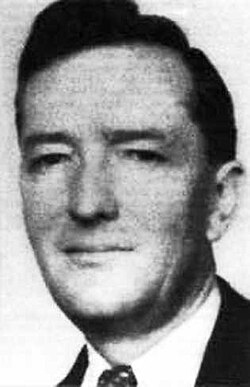

William Stephenson
Canadian spymaster, code name Intrepid, 1897 to 1989

A Canadian World War I fighter pilot and inventor-turned-industrialist who ran British Security Coordination in New York during World War II under the code name Intrepid. He worked closely with William Donovan and helped shape the OSS, the forerunner of the CIA. 1
Ian Fleming, who worked in British naval intelligence, named him as one of the real spies behind James Bond. The 1976 bestseller A Man Called Intrepid made him famous, but historians say it exaggerated his role. 1
Open in the interactive Watcher
Related
- British Security Coordination Ran British Security Coordination
- OSS Helped shape the OSS
- British Security Coordination opens Arrived in New York, 1940
Sources
- William Stephenson Wikipedia